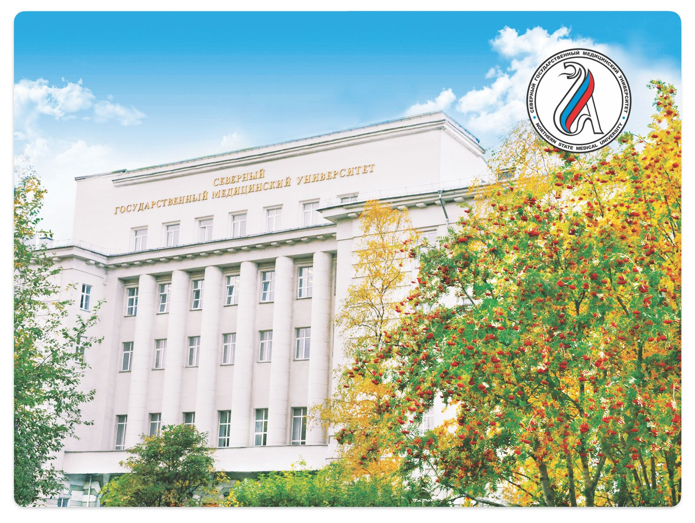

STUDY MBBS IN RUSSIA
NORTHERN STATE MEDICAL UNIVERSITY, ARKHANGELSK, RUSSIA
Country Rank - 195
World Rank - 5703

NSMU was established in 1932 for training medical personnel in the European North of Russia. It currently hosts about 9000 students from 17 countries in 16 faculties and institutes and has a staff of 980, 394 of which are academics – including 80 professors, 250 PhD. University buildings are provided with up-to-date equipment: computers, films, video aids, and other modern appliances. Training at the modern center of pre-clinical center presented by a plenty of state-of-the-art medical mannequins and equipment is a part and partial of educational program. At all there are 55 departments, 27 of them are clinical ones and situated at the best hospitals of the city. Well equipped clinical base allow training highly qualified specialists of different profiles according to modern requirements of the health care systems. Today NSMU is the main medical training center for six regions of Northern Russia. More than 100 graduates of NSMU are working abroad (USA, UK, Canada, Israel, Norway, Sweden, Finland, Germany, Netherlands, Denmark etc) 22 graduates have the foreign scientific degrees (PhD). About 30 graduates are preparing their PhD now in Norway, Sweden, Finland and Germany. The University offers students practical studies and training in Russia and abroad to become doctors, nurses, psychologists, specialists in social work, etc. The graduates are working more than in 20 countries. Number of international students in the NSMU is continuously growing.
Direct Admission - WhatsApp